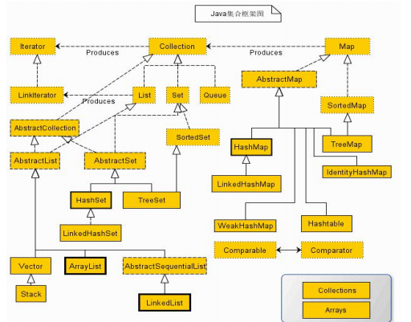

集合框架
2021-01-31 22:14 字数：9420 标签： Java集合框架图：

集合框架提供两个基本的接口：Collection和Map。Collection聚集的数据是独立的，没有关联值。Map聚集的数据是键值对，一个键与一个值存在关联。
一、集合
这里的集合指Collection及其子类，存储的数据是独立的，没有关联值。
1.1 Collection接口
Collection与Iterator用例：
import java.util.*;
public class UseCollection {
public static void main(String[] args) {
Collection<Integer> c = new LinkedList<>();
// 不允许对list做增删操作
List<Integer> list = Arrays.asList(3, 7, 11);
System.out.println("===add===addAll===");
for (int i = 0; i < 10; i++) {
c.add(i);
}
System.out.println(c);
c.addAll(list);
System.out.println(c);
//list.add(2);
list.set(1, 2);
System.out.println(list);
System.out.println("===iterator===");
Iterator<Integer> iterator = c.iterator();
while (iterator.hasNext()) {
int x = iterator.next();
if (x % 2 == 0) {
System.out.print(x + " ");
iterator.remove();
}
}
System.out.println();
System.out.println("===remove===removeAll===");
System.out.println(c);
c.remove(3);
c.remove(5);
System.out.println(c);
c.removeAll(list);
System.out.println(c);
System.out.println("===retainAll===");
System.out.println(c);
list = Arrays.asList(1, 7);
c.retainAll(list);
System.out.println(c);
System.out.println("===contains===containsAll===");
System.out.println(c.contains(6));
System.out.println(c.containsAll(list));
System.out.println("===toArray===");
Object[] a = c.toArray();
System.out.println(Arrays.toString(a));
Integer[] a2 = {1, 3, 5, 7, 9};
Integer[] a3 = c.toArray(a2);
System.out.println(Arrays.toString(a3));
Integer[] a4 = {1, 3, 5};
Integer[] a5 = c.toArray(a4);
System.out.println(Arrays.toString(a5));
Integer[] a6 = c.toArray(new Integer[0]);
System.out.println(Arrays.toString(a6));
System.out.println("===clear===");
c.clear();
System.out.println(c.isEmpty());
System.out.println(c.size());
}
}
java.util.Collection
-
Iterator iterator() 返回此集合中元素的迭代器
-
int size() 返回此集合中的元素数。
-
boolean isEmpty() 如果此集合不包含任何元素，则返回 true 。
-
boolean contains(Object o) 如果此collection包含指定的元素，则返回 true 。
-
boolean containsAll(Collection<?> c) 如果此集合包含指定集合中的所有元素，则返回 true 。
-
boolean add(E e) 确保此集合包含指定的元素（可选操作）。
-
boolean addAll(Collection<? extends E> c) 将指定集合中的所有元素添加到此集合中（可选操作）。
-
boolean remove(Object o) 从此集合中移除指定元素的单个实例（如果存在）（可选操作）。
-
boolean removeAll(Collection<?> c) 删除此集合的所有元素，这些元素也包含在指定的集合中（可选操作）。
-
boolean retainAll(Collection<?> c) 仅保留此集合中包含在指定集合中的元素（可选操作）。
-
Object[] toArray() 返回包含此集合中所有元素的数组。
-
T[] toArray(T[] a) 返回一个包含此collection中所有元素的数组; 返回数组的运行时类型是指定数组的运行时类型。
1.2 迭代器
java.util.Iterator
- boolean hasNext() 如果迭代具有更多元素，则返回 true 。
- E next() 返回迭代中的下一个元素。
- default void remove() 从底层集合中移除此迭代器返回的最后一个元素（可选操作）。
1.3 链表
ArrayList用例：
import java.lang.reflect.Field;
import java.util.ArrayList;
import java.util.Arrays;
import java.util.List;
import java.util.ListIterator;
public class UseArrayList {
public static void main(String[] args) throws Exception {
ArrayList<Integer> list = new ArrayList<>();
List<Integer> list2 = Arrays.asList(3, 7, 21, 42);
System.out.println("============add===addAll===========");
for (int i = 0; i < 10; i++) {
list.add(i+10);
}
System.out.println(list);
list.add(10, 11);
System.out.println(list);
list.addAll(2, list2);
System.out.println(list);
System.out.println("====indexOf===lastIndexOf===");
System.out.println(list.indexOf(13));
System.out.println(list.lastIndexOf(15));
System.out.println("==============listIterator=====================");
System.out.println(list);
ListIterator<Integer> listIterator = list.listIterator(5);
while (listIterator.hasNext()) {
int x = listIterator.next();
if (x % 4 == 0) {
listIterator.remove();
}
}
System.out.println(list);
while (listIterator.hasPrevious()) {
int x = listIterator.previous();
if (x % 2 == 0) {
listIterator.remove();
}
}
System.out.println(list);
while (listIterator.hasNext()) {
int x = listIterator.next();
listIterator.set(x+1);
}
System.out.println(list);
while (listIterator.hasPrevious()) {
int x = listIterator.previous();
listIterator.add(x + x + x);
listIterator.previous();
}
System.out.println(list);
System.out.println("===========remove==========");
System.out.println(list);
list.remove(0);
list.remove(2);
System.out.println(list);
System.out.println("===========set===========");
list.set(0, Integer.valueOf("4"));
list.set(2, Integer.valueOf("7"));
list.set(4, Integer.valueOf("5"));
System.out.println(list);
System.out.println("===========get=============");
System.out.println(list.get(2));
System.out.println(list.get(5));
System.out.println(list.get(list.size()-1));
System.out.println("===========ensureCapacity===trimToSize=============");
Class<?> c = list.getClass();
Field f = c.getDeclaredField("elementData");
f.setAccessible(true);
Object obj = null;
list.ensureCapacity(50);
obj = f.get(list);
System.out.println(((Object[])obj).length);
list.trimToSize();
obj = f.get(list);
System.out.println(((Object[])obj).length);
}
}
LinkedList用例:
import java.util.Arrays;
import java.util.LinkedList;
import java.util.List;
import java.util.ListIterator;
public class UseLinkedList {
public static void main(String[] args) throws Exception {
LinkedList<Integer> list = new LinkedList<Integer>();
List<Integer> list2 = Arrays.asList(3, 7, 21, 42);
System.out.println("===add===addFirst===addLast===addAll===");
for (int i = 0; i < 10; i++) {
list.add(i+10);
}
System.out.println(list);
list.add(10, 11);
System.out.println(list);
list.addFirst(34);
System.out.println(list);
list.addLast(17);
System.out.println(list);
list.addAll(3, list2);
System.out.println(list);
System.out.println("====indexOf===lastIndexOf===");
System.out.println(list.indexOf(13));
System.out.println(list.lastIndexOf(15));
System.out.println("==============listIterator=================");
System.out.println(list);
ListIterator<Integer> listIterator = list.listIterator(5);
while (listIterator.hasNext()) {
int x = listIterator.next();
if (x % 4 == 0) {
listIterator.remove();
}
}
System.out.println(list);
while (listIterator.hasPrevious()) {
int x = listIterator.previous();
if (x % 2 == 0) {
listIterator.remove();
}
}
System.out.println(list);
while (listIterator.hasNext()) {
int x = listIterator.next();
listIterator.set(x+1);
}
System.out.println(list);
while (listIterator.hasPrevious()) {
int x = listIterator.previous();
listIterator.add(x + x + x);
listIterator.previous();
}
System.out.println(list);
System.out.println("====remove===removeFirst===removeLast===");
System.out.println(list);
list.remove(0);
list.remove(2);
System.out.println(list);
System.out.println(list.removeFirst());
System.out.println(list.removeLast());
System.out.println(list);
System.out.println("===========set===========");
list.set(0, Integer.valueOf("4"));
list.set(2, Integer.valueOf("7"));
list.set(4, Integer.valueOf("5"));
System.out.println(list);
System.out.println("===get===getFirst===getLast===");
System.out.println(list.get(2));
System.out.println(list.get(5));
System.out.println(list.get(list.size()-1));
System.out.println(list.getFirst());
System.out.println(list.getLast());
}
}
java.util.List
- ListIterator listIterator() 返回此列表中元素的列表迭代器（按适当顺序）。
- ListIterator listIterator(int index) 从列表中的指定位置开始，返回列表中元素的列表迭代器（按正确顺序）。
- void add(int index, E element) 将指定元素插入此列表中的指定位置（可选操作）。
- boolean addAll(int index, Collection<? extends E> c) 将指定集合中的所有元素插入到指定位置的此列表中（可选操作）。
- E remove(int index) 删除此列表中指定位置的元素（可选操作）。
- E get(int index) 返回此列表中指定位置的元素。
- E set(int index, E element) 用指定的元素替换此列表中指定位置的元素（可选操作）。
- int indexOf(Object o) 返回此列表中第一次出现的指定元素的索引，如果此列表不包含该元素，则返回-1。
- int lastIndexOf(Object o) 返回此列表中指定元素最后一次出现的索引，如果此列表不包含该元素，则返回-1。
java.util.ListIterator
- void add(E e) 将指定的元素插入列表（可选操作）。
- boolean hasPrevious() 如果此列表迭代器在反向遍历列表时具有更多元素，则返回 true 。
- E previous() 返回列表中的上一个元素并向后移动光标位置。
- int nextIndex() 返回后续调用 next()将返回的元素的索引。
- int previousIndex() 返回后续调用 previous()将返回的元素的索引。
java.util.LinkedList
- LinkedList() 构造一个空列表。
- LinkedList(Collection<? extends E> c) 按照集合的迭代器返回的顺序构造一个包含指定集合元素的列表。
- void addFirst(E e) 在此列表的开头插入指定的元素。
- void addLast(E e) 将指定的元素追加到此列表的末尾。
- E getFirst() 返回此列表中的第一个元素。
- E getLast() 返回此列表中的最后一个元素。
- E removeFirst() 从此列表中删除并返回第一个元素。
- E removeLast() 从此列表中删除并返回最后一个元素。
1.4 散列集
import java.util.Arrays;
import java.util.HashSet;
import java.util.Iterator;
public class UseHashSet {
public static void main(String[] args) {
HashSet<Integer> set = new HashSet<>();
System.out.println("===add===addAll===");
for (int i = 0; i < 10; i++) {
set.add(i);
}
set.add(1);
System.out.println(set);
set.addAll(Arrays.asList(11, 19, 13));
System.out.println(set);
System.out.println("===iterator===");
Iterator<Integer> iterator = set.iterator();
while (iterator.hasNext()) {
System.out.print(iterator.next()+" ");
}
System.out.println();
System.out.println("===remove===removeAll===");
System.out.println(set);
set.remove(3);
System.out.println(set);
set.removeAll(Arrays.asList(1, 2, 5));
System.out.println(set);
System.out.println("===contains===containsAll===");
System.out.println(set);
System.out.println(set.contains(7));
System.out.println(set.containsAll(Arrays.asList(6, 8, 9)));
System.out.println("===retainAll===");
System.out.println(set);
set.retainAll(Arrays.asList(4, 6, 8));
System.out.println(set);
System.out.println("===clear===");
set.clear();
System.out.println(set.isEmpty());
System.out.println(set.size());
}
}
java.util.HasthSet
- HashSet() 构造一个新的空集; 支持HashMap实例具有默认初始容量（16）和加载因子（0.75）。
- HashSet(int initialCapacity) 构造一个新的空集; 支持HashMap实例具有指定的初始容量和默认加载因子（0.75）。
- HashSet(int initialCapacity, float loadFactor) 构造一个新的空集; 支持HashMap实例具有指定的初始容量和指定的加载因子。
- HashSet(Collection<? extends E> c) 构造一个包含指定集合中元素的新集合。
1.5 树集
TreeSet用例：
import java.util.Arrays;
import java.util.Iterator;
import java.util.TreeSet;
public class UseTreeSet {
public static void main(String[] args) {
TreeSet<Integer> set = new TreeSet<>();
System.out.println("===add===addAll===");
for (int i = 0; i < 10; i++) {
set.add(i);
}
set.add(1);
System.out.println(set);
set.addAll(Arrays.asList(11, 13, 19));
System.out.println(set);
System.out.println("===iterator===descandingIterator===");
Iterator<Integer> iterator = set.iterator();
while (iterator.hasNext()) {
System.out.print(iterator.next()+" ");
}
System.out.println();
Iterator<Integer> descandingIterator = set.descendingIterator();
while (descandingIterator.hasNext()) {
System.out.print(descandingIterator.next()+" ");
}
System.out.println();
System.out.println("===remove===removeAll===");
System.out.println(set);
set.remove(3);
System.out.println(set);
set.removeAll(Arrays.asList(1, 2, 5));
System.out.println(set);
System.out.println("===contains===containsAll===");
System.out.println(set);
System.out.println(set.contains(7));
System.out.println(set.containsAll(Arrays.asList(6, 8, 9)));
System.out.println("===retainAll===");
System.out.println(set);
set.retainAll(Arrays.asList(4, 6, 8));
System.out.println(set);
System.out.println("===first===last===");
System.out.println(set.first());
System.out.println(set.last());
System.out.println("===higher===lower===");
System.out.println(set);
System.out.println(set.higher(6));
System.out.println(set.lower(6));
System.out.println("===ceiling===floor===");
System.out.println(set);
System.out.println(set.ceiling(4));
System.out.println(set.floor(8));
System.out.println("===pollFirst===pollLast===");
System.out.println(set.pollFirst());
System.out.println(set.pollLast());
System.out.println("===clear===");
set.clear();
System.out.println(set.isEmpty());
System.out.println(set.size());
}
}
java.util.TreeSet
- TreeSet() 构造一个新的空树集，根据其元素的自然顺序进行排序。
- TreeSet(Collection<? extends E> c) 构造一个新的树集，其中包含指定集合中的元素，并根据其元素的 自然顺序进行排序 。
- TreeSet(Comparator<? super E> comparator) 构造一个新的空树集，根据指定的比较器进行排序。
- TreeSet(SortedSet s) 构造一个包含相同元素并使用与指定有序集相同排序的新树集。
java.util.SortedSet
- Comparator<? super E> comparator() 返回用于为了在这个组中的元素，或比较null如果这个集使用natural ordering的元素。
- E first() 返回此集合中当前的第一个（最低）元素。
- E last() 返回此集合中当前的最后一个（最高）元素。
java.util.NavigableSet
- E higher(E e) 返回此集合中的最小元素严格大于给定元素，如果没有这样的元素，则 null 。
- E lower(E e) 返回此集合中的最大元素严格小于给定元素，如果没有这样的元素，则 null 。
- E ceiling(E e) 返回此set中大于或等于给定元素的 null元素，如果没有这样的元素，则 null 。
- E floor(E e) 返回此set中小于或等于给定元素的最大元素，如果没有这样的元素，则 null 。
- E pollFirst() 检索并删除第一个（最低）元素，如果此组为空，则返回 null 。
- E pollLast() 检索并删除最后一个（最高）元素，如果此集合为空，则返回 null 。
- Iterator descendingIterator() 以降序返回此集合中元素的迭代器。
1.6 队列与双端队列
java.util.Queue
- boolean add(E e) 如果可以在不违反容量限制的情况下立即执行此操作，则将指定的元素插入此队列，成功时返回 true ，如果当前没有空间，则抛出 IllegalStateException 。
- boolean offer(E e) 如果可以在不违反容量限制的情况下立即执行此操作，则将指定的元素插入此队列。
- E remove() 检索并删除此队列的头部。
- E poll() 检索并删除此队列的头部，如果此队列为空，则返回 null 。
- E element() 检索但不删除此队列的头部。
- E peek() 检索但不删除此队列的头部，如果此队列为空，则返回 null 。
java.util.Deque
- void addFirst(E e) 如果可以在不违反容量限制的情况下立即插入指定元素，则在此双端队列的前面插入指定元素，如果当前没有可用空间，则抛出 IllegalStateException 。
- void addLast(E e) 如果可以在不违反容量限制的情况下立即插入指定元素，则在此双端队列的末尾插入指定元素，如果当前没有可用空间，则抛出 IllegalStateException 。
- boolean offerFirst(E e) 将指定元素插入此双端队列的前面，除非它违反容量限制。
- boolean offerLast(E e) 在此双端队列的末尾插入指定的元素，除非它违反容量限制。
- E removeFirst() 检索并删除此双端队列的第一个元素。
- E removeLast() 检索并删除此双端队列的最后一个元素。
- E pollFirst() 检索并删除此双端队列的第一个元素，如果此双端队列为空，则返回 null 。
- E pollLast() 检索并删除此双端队列的最后一个元素，如果此双端队列为空，则返回 null 。
java.util.ArrayDeque
- ArrayDeque() 构造一个空数组deque，其初始容量足以容纳16个元素。
- ArrayDeque(int numElements) 构造一个空数组deque，其初始容量足以容纳指定数量的元素。
java.util.PPriorityQueue
- PriorityQueue() 使用默认初始容量（11）创建PriorityQueue ，根据其natural ordering对其元素进行排序 。
- PriorityQueue(int initialCapacity) 创建具有指定初始容量的PriorityQueue ，该容量根据其natural ordering对其元素进行排序 。
- PriorityQueue(int initialCapacity, Comparator<? super E> comparator) 创建具有指定初始容量的 PriorityQueue ，该容量根据指定的比较器对其元素进行排序。
二、映射
2.1 基本映射操作
HashMap用例：
import java.util.Collection;
import java.util.HashMap;
import java.util.Map;
import java.util.Set;
/**
* @author lixiaoqin
* @date 2021.01.30
* */
public class UseHashMap {
public static void main(String[] args) {
HashMap<String, Integer> map = new HashMap<>();
System.out.println("===put===");
map.put("S", 23);
map.put("E", 47);
map.put("C", 19);
System.out.println(map);
System.out.println("===get===");
System.out.println(map.get("S"));
System.out.println("===put修改值===");
map.put("S", 24);
System.out.println(map);
Set<String> keySet = map.keySet();
Collection<Integer> values = map.values();
Set<Map.Entry<String, Integer>> entrySet = map.entrySet();
System.out.println("===keySet===values===entrySet===");
System.out.println(keySet);
System.out.println(values);
System.out.println(entrySet);
System.out.println("===containsKey===containsValue===");
System.out.println(map.containsKey("S"));
System.out.println(map.containsValue(47));
Map<String, Integer> map2 = new HashMap<>();
map2.put("A", 11);
map2.put("B", 13);
map2.put("K", 25);
System.out.println("===putAll===");
map.putAll(map2);
System.out.println(map);
System.out.println("===Entry.getKey===Entry.getValue===Entry.setValue===");
for (var entry : entrySet) {
System.out.print(entry.getKey());
System.out.print(":");
System.out.print(entry.getValue());
System.out.print(" ");
entry.setValue(entry.getValue()+1);
}
System.out.println();
System.out.println(entrySet);
}
}
TreeMap用例：
import java.util.TreeMap;
public class UseTreeMap {
public static void main(String[] args) {
TreeMap<String, Integer> map = new TreeMap<>();
map.put("S", 23);
map.put("E", 47);
map.put("C", 19);
System.out.println("===firstKey===lastKey===");
System.out.println(map.firstKey());
System.out.println(map.lastKey());
System.out.println("===firstEntry===lastEntry===");
System.out.println(map.firstEntry());
System.out.println(map.lastEntry());
System.out.println("===lowerKey===higherKey===");
System.out.println(map.lowerKey("E"));
System.out.println(map.higherKey("E"));
System.out.println("===lowerEntry===higherEntry===");
System.out.println(map.lowerEntry("E"));
System.out.println(map.higherEntry("E"));
System.out.println("===floorKey===ceilingKey===");
System.out.println(map.floorKey("S"));
System.out.println(map.ceilingKey("C"));
System.out.println("===floorEntry===ceilingEntry===");
System.out.println(map.floorEntry("S"));
System.out.println(map.ceilingEntry("C"));
}
}
java.util.Map<K, V>
- V get(Object key) 返回指定键映射到的值，如果此映射不包含键的映射，则返回 null 。
- default V getOrDefault(Object key, V defaultValue) 返回指定键映射到的值，如果此映射不包含键的映射，则返回 defaultValue 。
- V put(K key, V value) 将指定的值与此映射中的指定键相关联（可选操作）。
- boolean containsKey(Object key) 如果此映射包含指定键的映射，则返回 true 。
- boolean containsValue(Object value) 如果此映射将一个或多个键映射到指定值，则返回 true 。
java.util.HashMap<K, V>
- HashMap() 使用默认初始容量（16）和默认加载因子（0.75）构造一个空 HashMap 。
- HashMap(int initialCapacity) 使用指定的初始容量和默认加载因子（0.75）构造一个空 HashMap 。
- HashMap(int initialCapacity, float loadFactor) 使用指定的初始容量和加载因子构造一个空 HashMap 。
- HashMap(Map<? extends K,? extends V> m) 构造一个新的 HashMap ，其映射与指定的 Map相同。
java.util.TreeMap<K, V>
- TreeMap() 使用其键的自然顺序构造一个新的空树图。
- TreeMap(Comparator<? super K> comparator) 构造一个新的空树图，根据给定的比较器排序。
- TreeMap(Map<? extends K,? extends V> m) 构造一个新的树映射，其中包含与给定映射相同的映射，根据其键的 自然顺序排序 。
- TreeMap(SortMap<? extends K,? extends V> m) 构造一个包含相同映射的新树映射，并使用与指定有序映射相同的顺序。
java.util.SortedMap<K, V>
- Comparator<? super K> comparator() 返回用于为了在这个映射中的键，或比较null如果此映射使用natural ordering的钥匙。
- K firstKey() 返回此映射中当前的第一个（最低）键。
- K lastKey() 返回此映射中当前的最后一个（最高）键。
java.util.NavigableMap<K, V>
- K higherKey(K key) 返回严格大于给定键的最小键，如果没有这样的键，则返回 null 。
- K lowerKey(K key) 返回严格小于给定键的最大键，如果没有这样键，则返回 null 。
- K ceilingKey(K key) 返回大于或等于给定键的 null键，如果没有这样的键，则 null 。
- K floorKey(K key) 返回小于或等于给定键的最大键，如果没有这样的键，则 null 。
2.2 映射视图
java.util.Map
- Set<Map.Entry<K,V» entrySet() 返回此映射中包含的映射的Set视图。
- Set keySet() 返回此映射中包含的键的Set视图。
- Collection values() 返回此映射中包含的值的Collection视图。
java.util.Map.Entry<K, V>
- V getValue() 返回与此条目对应的值。
- int hashCode() 返回此映射条目的哈希码值。
- V setValue(V value) 用指定的值替换此条目对应的值（可选操作）。
三、小集合
Java9提供了一些静态方法，可以生成给定元素的集或列表，以及映射。
List<String> names = List.of("Peter", "Paul", "Mary");
Set<Integer> numbers = Set.of(2, 3, 5);
Map<String, Integer> scores = Map.of("Peter", 2, "Paul", 3, "Mary", 5);
List、Set接口of方法有11个重载版本，参数个数从0到10。还有一个可变参数的of方法。而Map提供了ofEntries方法和entry方法，ofEntries可接受人一个Entry对象，entry用于创建这些对象。
import static java.util.Map.ofEntries;
import static java.util.Map.entry;
...
Map<String, Integer> scores = ofEntries(
entry("Peter", 2),
entry("Paul", 3),
entry("Mary", 5)
);
这些集合不可改变。试图修改会导致UnsupportedOperationException。
四、子范围
例如：
List<Integer> list2 = list.subList(0, 10);
java.util.List
- List subList(int fromIndex, int toIndex) 返回指定的 fromIndex （包含）和 toIndex （不包括）之间的此列表部分的视图。
java.util.SortedSet
- SortedSet subSet(E fromElement, E toElement) 返回此set的部分视图，其元素范围从 fromElement （包括 toElement ）到 toElement （独占）。
- SortedSet headSet(E toElement) 返回此set的部分视图，其元素严格小于 toElement 。
- SortedSet tailSet(E fromElement) 返回此set的部分视图，其元素大于或等于 fromElement 。
- NavigableSet subSet(E fromElement, boolean fromInclusive, E toElement, boolean toInclusive) 返回此set的部分视图，其元素范围为 fromElement到 toElement 。
- NavigableSet headSet(E toElement, boolean inclusive) 返回此set的部分视图，其元素小于（或等于，如果 inclusive为true） toElement 。
- NavigableSet tailSet(E fromElement, boolean inclusive) 返回此set的部分视图，其元素大于（或等于，如果 inclusive为true） fromElement 。
java.util.SortedMap<K, V>
- SortedMap<K,V> subMap(K fromKey, K toKey) 返回此映射部分的视图，其键的范围从 fromKey （包括 toKey ）到 toKey （独占）。
- SortedMap<K,V> headMap(K toKey) 返回此映射的部分视图，其键严格小于 toKey 。
- SortedMap<K,V> tailMap(K fromKey) 返回此映射部分的视图，其键大于或等于 fromKey 。
五、不可修改的视图
Collections这个工具类可以生成不可修改的视图。得到的集合可以调用它们所有的方法，但会更改集合方法被调用会抛出UnsupportedOperationException。
java.util.Collections
- static Collection unmodifiableCollection(Collection<? extends T> c) 返回指定集合的 unmodifiable view 。
- static List unmodifiableList(List<? extends T> list) 返回指定列表的 unmodifiable view 。
- static <K,V> Map<K,V> unmodifiableMap(Map<? extends K,? extends V> m) 返回指定映射的 unmodifiable view 。
- static <K,V>NavigableMap<K,V> unmodifiableNavigableMap(NavigableMap<K,? extends V> m) 返回指定的可导航地图的 unmodifiable view 。
- static NavigableSet unmodifiableNavigableSet(NavigableSet s) 返回指定的可导航集的 unmodifiable view 。
- static Set unmodifiableSet(Set<? extends T> s) 返回指定集的 unmodifiable view 。
- static <K,V>SortedMap<K,V> unmodifiableSortedMap(SortedMap<K,? extends V> m) 返回指定有序映射的 unmodifiable view 。
- static SortedSet unmodifiableSortedSet(SortedSet s) 返回指定有序集的 unmodifiable view 。
六、同步视图
Collections提供了一些方法确保集合并不被多线程破坏。
java.util.Collections
- static Collection synchronizedCollection(Collection c) 返回由指定集合支持的同步（线程安全）集合。
- static List synchronizedList(List list) 返回由指定列表支持的同步（线程安全）列表。
- static <K,V> Map<K,V> synchronizedMap(Map<K,V> m) 返回由指定映射支持的同步（线程安全）映射。
- static <K,V> NavigableMap<K,V> synchronizedNavigableMap(NavigableMap<K,V> m) 返回由指定的可导航映射支持的同步（线程安全）可导航映射。
- static NavigableSet synchronizedNavigableSet(NavigableSet s) 返回由指定的可导航集支持的同步（线程安全）可导航集。
- static Set synchronizedSet(Set s) 返回由指定集支持的同步（线程安全）集。
- static <K,V> SortedMap<K,V> synchronizedSortedMap(SortedMap<K,V> m) 返回由指定的有序映射支持的同步（线程安全）有序映射。
- static SortedSet synchronizedSortedSet(SortedSet s) 返回由指定有序集支持的同步（线程安全）有序集。
七、检查型视图
检查型视图用来对泛型类型可能出现问题提供调试支持。如果没有它，可能导致错误的类型元素混入泛型集合中。例如：
var strings = new ArrayList<String>();
ArrayList rawList = strings; // 只会发出警告，无错误。可兼容旧代码
rawList.add(new Date()); // 现在strings包含了Date对象。
这个错误的add方法在运行时检测不到。只有当另一部分代码调用get方法，并将结果强制转换为String时，才会出现类强制转换异常。为了解决这个问题，Collections提供了生成检查型视图的方法，在集合插入元素时，会检查类型。
例如：
List<String> safeStrings = Collections.checkedList(strings, String.class);
ArrayList rawList = safeStrings;
rawList.add(new Date()); // 此时检查型列表会抛出ClassCastException
java.util.Collections
- static Collection checkedCollection(Collection c, Class type) 返回指定集合的动态类型安全视图。
- static List checkedList(List list, Class type) 返回指定列表的动态类型安全视图。
- static <K,V> Map<K,V> checkedMap(Map<K,V> m, Class keyType, Class valueType) 返回指定映射的动态类型安全视图。
- static <K,V> NavigableMap<K,V> checkedNavigableMap(NavigableMap<K,V> m, Class keyType, Class valueType) 返回指定可导航映射的动态类型安全视图。
- static NavigableSet checkedNavigableSet(NavigableSet s, Class type) 返回指定可导航集的动态类型安全视图。
- static Queue checkedQueue(Queue queue, Class type) 返回指定队列的动态类型安全视图。
- static Set checkedSet(Set s, Class type) 返回指定集的动态类型安全视图。
- static <K,V> SortedMap<K,V> checkedSortedMap(SortedMap<K,V> m, Class keyType, Class valueType) 返回指定有序映射的动态类型安全视图。
- static SortedSet checkedSortedSet(SortedSet s, Class type) 返回指定有序集的动态类型安全视图。
八、泛型算法
8.1 排序与混排
假定列表的元素实现了Comparable接口：
var staff = new LinkedList<String>();
// 填充集合
Collections.sort(staff);
逆序：
Collections.sort(staff, Comparator.reverseOrder());
staff.sort(Comparator.reverseOrder());
也可以传入Comparator的导出类，假定实现了comparator：
Collections.sort(staff, comparator);
staff.sort(comparator);
逆序：
Collections.sort(staff, comparator.reversed());
staff.sort(comparator.reversed());
混排其实就是把元素打乱， 例如：
Collections.shuffle(staff);
Collections.shuffle(staff, new Random());
java.util.Collections
- static <T extends Comparable<? super T» void sort(List list) 根据其元素的natural ordering ，将指定列表按升序排序。
- static void sort(List list, Comparator<? super T> c) 根据指定比较器引发的顺序对指定列表进行排序。
- static void shuffle(List<?> list) 使用默认的随机源随机置换指定的列表。
- static void shuffle(List<?> list, Random rnd) 使用指定的随机源随机置换指定的列表。
java.util.List
- default void sort(Comparator<? super E> c) 根据指定的Comparator引发的顺序对此列表进行排序。
java.util.Comparator
- static <T extends Comparable<? super T» Comparator reverseOrder() 返回一个比较器，逆置Comparable接口提供的顺序。
- default Comparator reversed() 返回一个比较器，它强制执行此比较器的反向排序。
8.2 二分查找
集合c、查找element，比较器comparator:
int i = Collections.binarySearch(c, element);
int j = Collections.binarySearch(c, element, comparator);
java.util.Collections
- static int binarySearch(List<? extends Comparable<? super T» list, T key) 使用二进制搜索算法在指定列表中搜索指定对象。
- static int binarySearch(List<? extends T> list, T key, Comparator<? super T> c) 使用二进制搜索算法在指定列表中搜索指定对象。
如果为binarySearch方法提供一个链表，它自动退化为线性查找。查找前必须保证列表是有序的。
九、补充
Vector用例：
import java.util.Vector;
import java.util.List;
import java.util.Arrays;
import java.util.ListIterator;
import java.util.Enumeration;
public class UseVector {
public static void main(String[] args) {
Vector<Integer> vector = new Vector<>();
List<Integer> list2 = Arrays.asList(3, 7, 21, 42);
System.out.println("============add===addAll===========");
for (int i = 0; i < 10; i++) {
vector.add(i+10);
}
System.out.println(vector);
vector.add(10, 11);
System.out.println(vector);
vector.addAll(2, list2);
System.out.println(vector);
System.out.println("===indexOf===lastIndexOf===");
System.out.println(vector.indexOf(13));
System.out.println(vector.lastIndexOf(15));
System.out.println("===========listIterator============");
System.out.println(vector);
ListIterator<Integer> listIterator = vector.listIterator(5);
while (listIterator.hasNext()) {
int x = listIterator.next();
if (x % 4 == 0) {
listIterator.remove();
}
}
System.out.println(vector);
while (listIterator.hasPrevious()) {
int x = listIterator.previous();
if (x % 2 == 0) {
listIterator.remove();
}
}
System.out.println(vector);
while (listIterator.hasNext()) {
int x = listIterator.next();
listIterator.set(x+1);
}
System.out.println(vector);
while (listIterator.hasPrevious()) {
int x = listIterator.previous();
listIterator.add(x + x + x);
listIterator.previous();
}
System.out.println(vector);
System.out.println("===========remove==========");
System.out.println(vector);
vector.remove(0);
vector.remove(2);
System.out.println(vector);
System.out.println("===========set===========");
vector.set(0, Integer.valueOf("4"));
vector.set(2, Integer.valueOf("7"));
vector.set(4, Integer.valueOf("5"));
System.out.println(vector);
System.out.println("===========get=============");
System.out.println(vector.get(2));
System.out.println(vector.get(5));
System.out.println(vector.get(vector.size()-1));
System.out.println("===========elements===nextElement=============");
Enumeration<Integer> enumeration = vector.elements();
while (enumeration.hasMoreElements()) {
System.out.print(enumeration.nextElement()+" ");
}
System.out.println();
}
}
9.1 ArrayList和Vector区别
9.2 HashMap、Hashtable、ConcurrentHashMap的区别
9.3 hashCode约束
Object.hashCode方法实际调用的是System.identityHashCode方法得到通过对象内存地址计算的散列值。自定义类型要作为HashMap或HashSet的键时，equals与hashCode两个方法必须重写。
java.lang.Object 中对 hashCode 的约定：
- 在一个应用程序执行期间，如果一个对象的 equals 方法做比较所用到的信息没有被修改的话，则对该对象调用 hashCode 方法多次，它必须始终如一地返回同一个整数。
- 如果两个对象根据 equals(Object o)方法是相等的，则调用这两个对象中任一对象的 hashCode 方法必须产生相同的整数结果。
- 如果两个对象根据 equals(Object o)方法是不相等的，则调用这两个对象中任一个对象的 hashCode 方法，不要求产生不同的整数结果。但如果能不同，则可能提高散列表的性能。
总的来说，如果x.equals(y) == true，则x.hashCode() == y.hashCode()必须成立；但是如果x.hashCode() == y.hashCode()，x.equals(y)不一定成立。假如x.equals(y) == false，x.hashCode()与y.hashCode()不同，对于散列表来说，效率更加高效，键值对在散列表分布的更加均匀。
自定义的类型作为HashMap或HashSet键，它的hashCode方法最好应该满足三个条件：
- 一致性——等价的键必然产生相等的哈希值；
- 高效性——计算简便；
- 均匀性——均匀地散列所有的键
例如：
public class Transaction
{
...
private final String who;
private final Date when;
private final double amount;
public int hashCode()
{
int hash = 17;
hash = 31 * hash + who.hashCode();
hash = 31 * hash + when.hashCode();
hash = 31 * hash
+ ((Double) amount).hashCode();
return hash;
}
...
}
一般自定义类型对象可将多个成员变量的哈希值组合计算出它的哈希值。采用Horner经典算法，有N个变量参与计算哈希值，那么使用N次乘法、加法，计算散列值如上代码所示，计算相当于在算一个N位R进制值，这里的R最好取一个够小素数，比如31，可以保证所有变量都发挥作用，HashMap或HashSet再计算索引的时候不会溢出表的尺寸。
作为HashMap与HashSet的键，一旦存入，就不要修改，前后哈希值不一致，会导致查询失败。
9.4 TreeMap/TreeSet的键
TreeMap/TreeSet的键最好实现Comparable接口，不然则在构造的时候，传入相应的Comparator实现。
十、参考
- Java核心技术卷一原书11版 机械工业出版社 凯·S.霍斯特曼
- 算法第四版 人民邮电出版社 Robert Sedgewick/Kevin Wayne